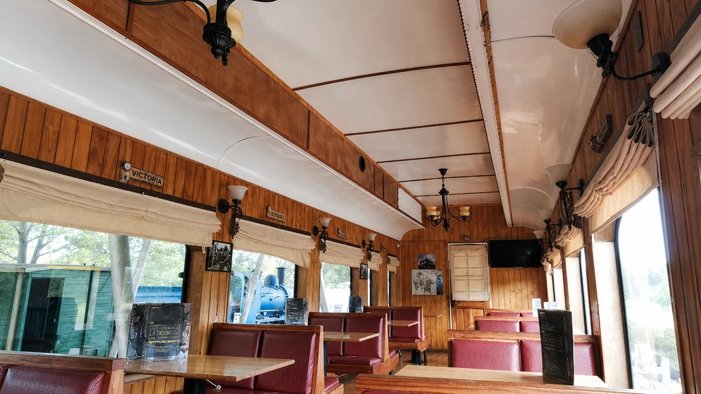
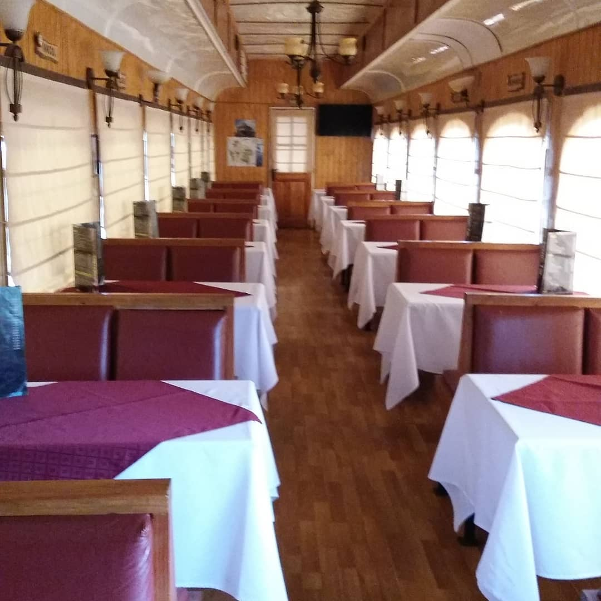
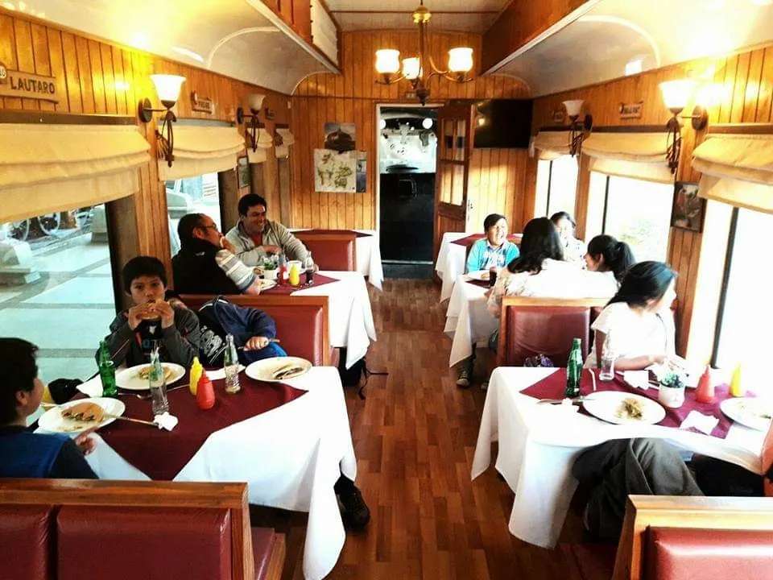
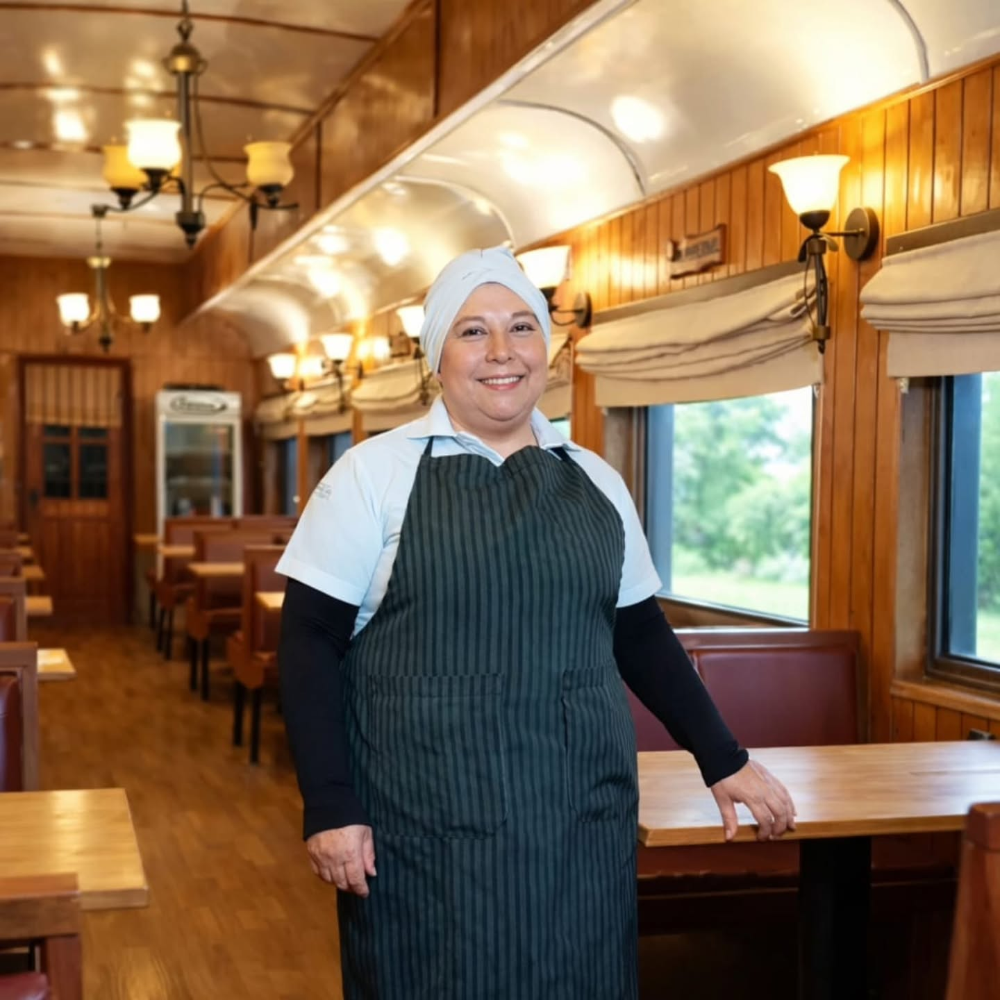
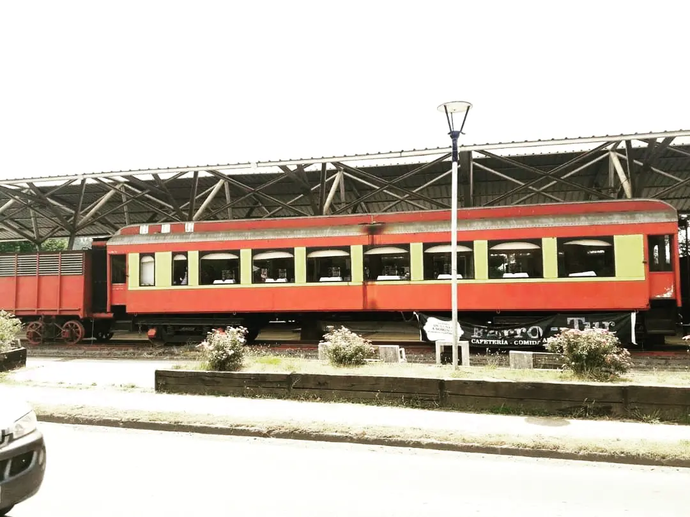

Cafetería · Museo Ferroviario · Carahue · Desde 2015
El único café de La Araucanía dentro de un vagón alemán de 1929. Afuera puede llover todo lo que quiera.
Mayo · Junio · Julio · Agosto
Un julio frío tiene mejor sabor adentro del vagón. Café, tortas y onces. Carahue, desde 2015.

El vagón en invierno. Madera original, lámparas de época, calefacción.

Capacidad para grupos y familias. Un espacio que invita a quedarse.

El equipo está acá desde que abrimos, en 2015.
Invierno · La Araucanía
La luz de las lámparas se siente distinta cuando afuera está nublado.
El café huele más. La madera habla más. El vagón de 1929 lleva diez años
siendo exactamente así en cada invierno de La Araucanía.
Un espacio para estar con tiempo. Sin el ruido del verano,
sin apuro. Para los que viven en la región o pasan por la ruta,
es el tipo de tarde que no se olvida fácil.
"El vagón tiene algo que no se explica bien hasta que estás adentro. Lo de las lámparas y los tapizados rojos no es decorado reciente. Eso lleva décadas así."

Un coche alemán construido en 1929
El coche fue fabricado en Alemania en 1929 y llegó a Chile en los años de mayor actividad ferroviaria en La Araucanía. Hoy forma parte del Museo Ferroviario de Carahue, restaurado como estaba: madera de alerce, lámparas originales, tapizados de cuero rojo.
No hay otro lugar así en la región. Y en invierno, cuando hay menos gente, el espacio se siente completamente tuyo.
Cómo llegar
Horario invierno
Dirección
Calle Prat s/n
Museo Ferroviario de Carahue
La Araucanía, Chile
Contacto
+56 9 1234 5678
WhatsApp disponible
@ferro.tur_
En invierno recomendamos confirmar la visita si van en grupo.